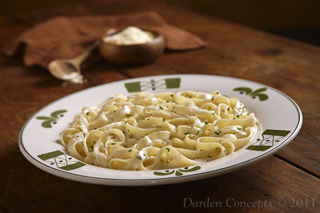

Alfredo Pasta

Description:
Alfredo pasta is the ultimate comfort food—featuring fettuccine noodles bathed in a velvety Parmesan cream sauce made with real butter, garlic, and heavy cream. It's rich yet simple, indulgent yet easy. A dish that brings restaurant-quality flavor to your kitchen in under 30 minutes.
Ingredients:
- 200g (7 oz) fettuccine (or pasta of choice)
- 2 large eggs
- 2 tbsp unsalted butter
- 2 cloves garlic, minced
- 2 cloves garlic, minced
- Pinch of ground nutmeg(optional)
- 3/4 cup freshly grated Parmesan cheese (plus more for topping)
- Salt, to taste
- Black pepper, freshly ground, to taste
- Fresh parsley, chopped, for garnish (optional)
- Optional add-ins: Grilled chicken, sautéed shrimp, or mushrooms
Instructions:
- Bring a large pot of salted water to a boil. Cook fettuccine according to package instructions until al dente. Reserve 1/2 cup pasta water, then drain.
- In a large skillet or saucepan over medium heat, melt the butter, then add garlic and sauté for 30-60 seconds until fragrant (do not brown).
- Pour in the heavy cream. Simmer for 2-3 minutes, stirring gently, until it begins to thicken slightly.
- Reduce heat to low. Slowly whisk in the Parmesan cheese until fully melted and smooth. Season with salt and black pepper to taste. If the sauce is too thick, add a splash of the reserved pasta water.
- Toss the cooked pasta into the sauce until well coated. Simmer together for 1-2 minutes. Top with extra Parmesan and chopped parsley if desired.
Back to Home